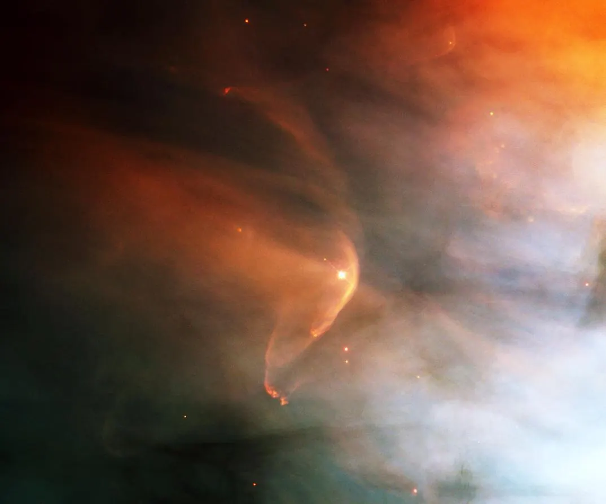
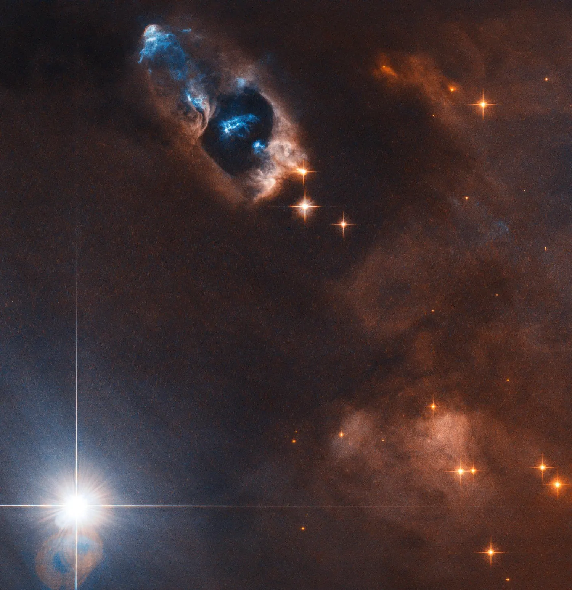
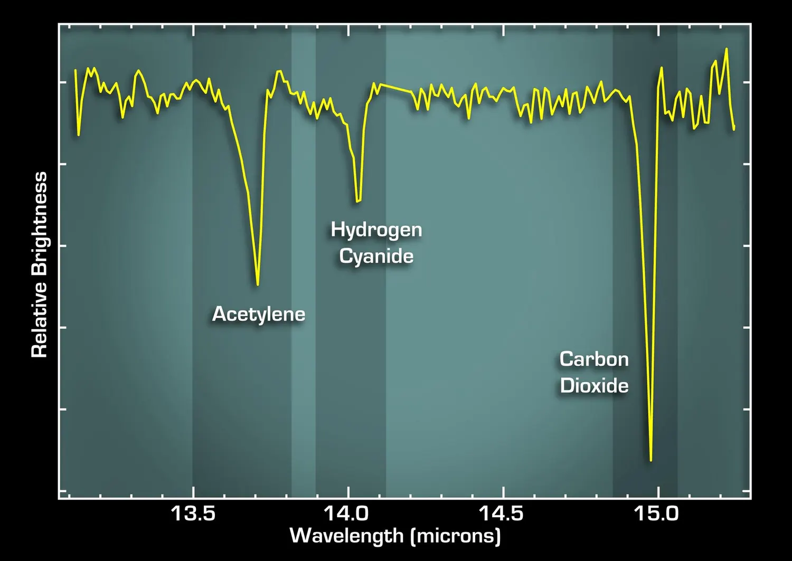
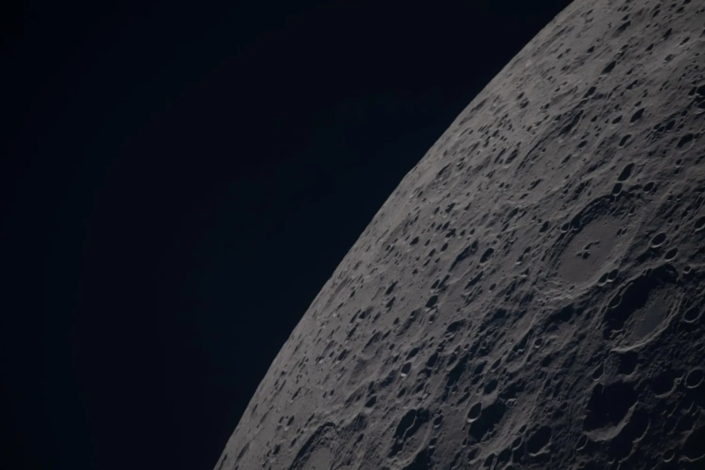

We know when it started, almost exactly
The Solar System is 4.5682 ± 0.0016 billion years old. That number does not come from theory — it comes from lead-isotope dating of calcium–aluminium-rich inclusions, millimetre-scale white specks inside primitive meteorites. They were the first solids to condense out of the cooling nebula, so their crystallisation marks time zero. Every date on this page is counted from there.

The nebular hypothesis, stage by stage
The broad story is well established and has been since the eighteenth century in outline: a rotating cloud collapses, flattens, and accretes. What the last thirty years added is dates, and a good deal of argument about the middle chapters.
A cold cloud, and something that shoved it
The Sun formed inside a giant molecular cloud of hydrogen and helium, dense and cold enough that gravity could win. Meteorites contain the decay products of aluminium-26, an isotope with a half-life of only 717,000 years — far too short-lived to have been lying around. Something made it just before the Solar System formed, and the usual candidate is a nearby supernova whose shockwave also triggered the collapse. Caveat: Still debated An alternative holds that the aluminium-26 was produced locally, by cosmic-ray reactions near the young Sun, with no supernova required.
Collapse, and the spin that flattened everything
As the cloud fell inward it had to conserve angular momentum, so it spun faster — and a faster-spinning cloud cannot stay spherical. It flattened into a disc with a thickening knot at the centre. This is why the Solar System is flat: every planet still orbits in roughly the plane that collapse handed them, because they were built out of that disc.
The protoplanetary disc
Gas and dust settled into a rotating disc extending out past 100 AU, hot and metal-rich near the centre, cold and gas-dominated at the edges. Discs like this are short-lived: observations of other young stars put typical lifetimes at 1–10 million years, commonly around three, before the gas is blown away. Everything solid in the Solar System had to be assembled inside that window.
A violent young Sun
At the centre, the protosun contracted and entered its T-Tauri phase: wildly variable, accreting hard, and driving fierce stellar winds that helped strip the inner disc. It was not yet a star in the strict sense. Hydrogen fusion — the point at which the Sun joined the main sequence — did not begin until roughly 50 million years after time zero.
The frost line decided what kind of world you get
Somewhere near 5 AU — about Jupiter's distance — lay the frost line: the boundary beyond which water, ammonia and methane could freeze. Inside it only rock and metal could condense, so the inner planets had little to build from and stayed small. Outside it, ice was abundant; cores grew fast enough to seize hydrogen and helium directly from the disc and became giants. The line was not fixed — it migrated outward as the Sun brightened and the gas thinned.
Dust to chondrules to planetesimals
Dust grains stuck together electrostatically, then gravitationally. Chondrules — millimetre-scale beads of once-molten silicate, flash-heated to around 1,000 K and cooled again — formed in this window and were swept straight into growing bodies. Kilometre-scale planetesimals assembled in as little as a few thousand years in the inner disc; the largest then ran away with the rest, reaching 100 km within a million years and Mars-sized embryos within about three.
Final assembly by collision
The last stage was not gentle. Dozens of planetary embryos on crossing orbits merged through giant impacts over tens of millions of years. The four terrestrial planets are what survived that demolition derby — and their spins, tilts and oddities are largely records of the last big thing that hit them. The impacts did not stop sharply either: the collision that made the Moon, below, may have come as late as 200 million years in.
The impact that made the Moon
A body roughly the size of Mars, usually called Theia, struck the young Earth. The debris thrown into orbit accreted into the Moon — which is why the Moon is depleted in iron and matches Earth's isotopic composition so closely. Caveat: Age contested Dates from the hafnium–tungsten and calcium–magnesium systems span 4.51 to 4.35 billion years, and different minerals give different answers, so the timing remains open.
Did the giants move?
Two influential models say yes. The Grand Tack has Jupiter migrate inward to about 1.5 AU and then reverse outward with Saturn, truncating the inner disc and explaining why Mars and Mercury are so small. The Nice model adds a later instability, in which Jupiter and Saturn cross a resonance and scatter the outer planets into today's orbits. Caveat: Models Both reproduce features of the real Solar System well, but neither is established fact, and their timings are actively disputed.
The bombardment that may not have happened
Radiometric ages of lunar impact basins cluster suspiciously — Nectaris around 3.92, Imbrium around 3.85 billion years — which led to the idea of a Late Heavy Bombardment: a distinct, violent late spike in impacts. Caveat: Now questioned More recent work, including impact ages on Vesta running as early as 4.4 billion years, suggests bombardment peaked far earlier and simply declined, with no separate spike. The clustering may be an artefact of sampling only a few Apollo landing sites.

Discs like ours, around other stars
The strongest support for this whole account is that we can watch it happen elsewhere. Telescopes have imaged protoplanetary discs around young stars, complete with gaps and rings where planets appear to be sweeping their orbits clear, and have detected the organic molecules that rocky planets are built from still suspended in the dust.

The record is still on the Moon
Earth erases its own history — plate tectonics, weather and water have recycled almost all of the original crust. The Moon does none of that. Its far side in particular preserves a nearly untouched record of four billion years of impacts, which is why lunar samples and orbital imagery remain the primary evidence for what the early Solar System was actually like.
